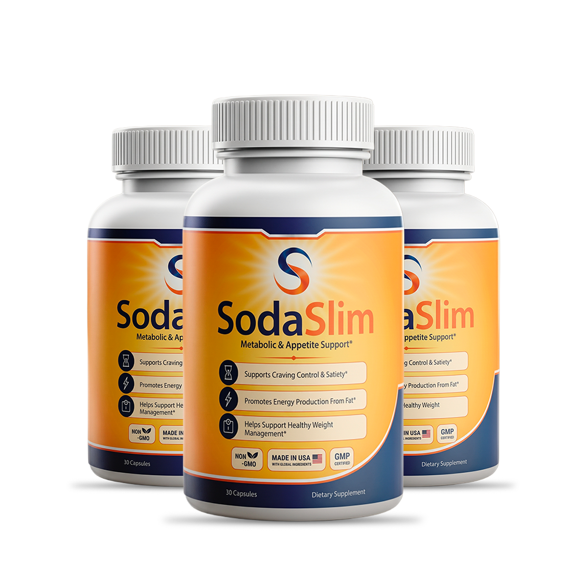

What Is SodaSlim And How Does It Work?
Hunger isn't always about an empty stomach. Sometimes it's a signal stuck in the "on" position.
That's the part most weight-loss advice skips. You can eat a full meal and still feel the pull toward the pantry twenty minutes later — not because your body needs fuel, but because the signal telling it "you're satisfied" never fully lands. Think of it like a thermostat that's stuck reading cold in a room that's already warm: it keeps calling for more, long after more isn't needed. That stuck signal is the hunger override — and it's the thing that quietly wrecks more diets than any lack of willpower ever does.
SodaSlim is a daily capsule built to work on that signal directly, while also giving the body something else to do with the fat it's already storing. The formula pairs thermogenic botanicals — caffeine, green tea, and green coffee bean — with two appetite-focused extracts, garcinia cambogia and raspberry ketones, aimed at quieting the false "eat now" signal while nudging stored fat toward becoming usable energy instead of dead weight.
It isn't framed as an overnight fix, and honestly, nothing that resets a signal this stubborn should be. SodaSlim is built for daily, consistent use — one capsule, worked into a routine you already have — so the override gets switched off gradually instead of forced off all at once.
SodaSlim Ingredients
Five ingredients, each one doing a specific job against the hunger override — not a sprawling label of things that sound good together.
- Caffeine Anhydrous — 138 mg: The most immediate lever in the formula. It sharpens energy and alertness fast, which matters because low energy is often the first thing that pushes people toward a snack they don't actually need.
- Green Tea Extract — 130 mg (70% polyphenols, 40% EGCG, 3%+ caffeine): Standardized rather than a vague "green tea powder," this extract is the one most tied to thermogenesis — the body generating heat, and spending energy, by burning fuel instead of storing it.
- Garcinia Cambogia — 130 mg (50% HCA): The appetite-focused piece of the formula, standardized to its active compound, HCA. It's the ingredient most directly aimed at the hunger override itself — taking the edge off the signal before it turns into a trip to the kitchen.
- Raspberry Ketones — 130 mg: Works alongside the metabolic ingredients in the blend, adding another angle of support to how the body processes stored fat.
- Green Coffee Bean Extract — 130 mg (50% chlorogenic acids): A second, gentler metabolic layer, standardized to its chlorogenic acid content rather than left as an unspecified bean extract.
Five actives, no filler blend hiding behind a proprietary label — a stimulant pair for energy, a metabolic pair for fat processing, and garcinia doing the direct work on appetite. That's the whole formula working from two angles at once instead of one.
SodaSlim Side Effects
Here's the part people tense up for, and with SodaSlim there's less to brace against than expected.
Every ingredient in the formula is a botanical extract or a naturally-occurring compound — not a synthetic stimulant stack cooked up to force a reaction. Caffeine, green tea, green coffee, garcinia, and raspberry ketones all have a long history of everyday dietary use, and SodaSlim is manufactured in the United States under GMP-certified production standards, using Non-GMO ingredients.
There's no widespread pattern of serious adverse reports tied to using SodaSlim as directed, and the caffeine content is disclosed on the label rather than buried — so anyone sensitive to stimulants knows exactly what they're taking before they take it.
As with any dietary supplement, check with a healthcare professional first if you're pregnant, nursing, taking medication, or managing an existing medical condition.
SodaSlim Dosage
One capsule. Once a day. That's the entire routine.
Each bottle holds a 30-day supply, and the label calls for one capsule daily — no multi-pill schedule to track, no timing gymnastics, nothing complicated enough to fall apart after a busy week. Most people take it in the morning, since the caffeine content is meant to carry energy through the part of the day cravings tend to hit hardest.
Larger multi-bottle options exist for anyone planning to give the formula more than a few weeks to work — which matters, because a signal this stubborn responds to consistency, not a single bottle tried for a few days and abandoned. Whatever size fits your plan, don't exceed the labeled daily dose; the override gets switched off by routine, not by rushing it.
SodaSlim – Refund Policy
Every SodaSlim order is backed by a 60-day money-back guarantee.
Sixty days is enough runway to actually judge whether the hunger override has quieted down — not a two-week trial that ends right as a routine starts to take hold. A company willing to stand behind a formula for that long is telling you something about how confident it is in what's in the capsule.
Full terms, eligibility, and how to request a refund are listed on the official SodaSlim website.
SodaSlim Customer Reviews
 Michael Thompson
Houston, TX
Verified Purchase – 3 Bottles
Michael Thompson
Houston, TX
Verified Purchase – 3 Bottles
"I carried extra weight for years and it wore down my confidence more than I ever admitted out loud. I stuck with SodaSlim for three months, and it wasn't some overnight switch — it was slow, then it wasn't. My clothes fit differently, I stopped avoiding mirrors, and I feel like myself again for the first time in a long time."
 Mark Rodriguez
Chicago, IL
Verified Purchase – 2 Bottles
Mark Rodriguez
Chicago, IL
Verified Purchase – 2 Bottles
"Watching my blood sugar made losing weight feel like a constant balancing act, and most things I tried just left me tired and hungrier than before. One month into SodaSlim and my energy actually feels steady instead of crashing by mid-afternoon. My metabolism finally feels like it's cooperating with me instead of working against me."
 Lauren Rio
Seattle, WA
Verified Purchase – 6 Bottles
Lauren Rio
Seattle, WA
Verified Purchase – 6 Bottles
"After menopause hit, the weight came on fast and nothing I did seemed to touch it — I figured that version of my body was gone for good. Two months into SodaSlim and I'm hiking again, actually enjoying it instead of dreading it. Getting my energy and my confidence back at the same time wasn't something I expected."
SodaSlim – Where To Buy
Where you buy this decides whether the guarantee behind it actually applies to you.
SodaSlim isn't sold on Amazon, eBay, or Walmart. Listings that look official occasionally show up on those platforms anyway, and with a formula built on specific standardized extracts — 50% HCA garcinia, EGCG-standardized green tea — there's no way to confirm from a marketplace listing that what's inside the bottle matches what's on the label.
There's a bigger cost hiding behind that risk: the 60-day money-back guarantee only applies to orders placed through the official source. A bottle bought elsewhere never routes back to the manufacturer, which means the safety net — and the customer support that comes with it — was never actually attached to that purchase.
To ensure you're getting the authentic product, most users choose to visit the official website directly.
Is SodaSlim A Scam?
No — and the label itself is the tell.
A lot of products in this category hide behind a vague "proprietary blend" so nobody can check what they're actually swallowing. SodaSlim doesn't do that. Every one of its five ingredients is listed with its exact amount and, where it matters, its standardization — 138 mg of caffeine, 50% HCA garcinia, EGCG-standardized green tea. It's produced in a GMP-certified U.S. facility, and it's backed by a 60-day guarantee that gives you real time to judge results instead of a rushed trial window.
That's the whole point of targeting the hunger override instead of just muscling through it with willpower: you're not fighting the signal, you're quieting it, one morning capsule at a time.
If it's not for you, that's genuinely fine — plenty of people manage their weight a different way, and no capsule replaces a conversation with a doctor about a real medical condition. But if what you're actually dealing with is a hunger signal that won't quit, energy that crashes by mid-afternoon, and a scale that hasn't moved despite doing everything right, the math is simple: try it for the sixty days you're guaranteed. If nothing shifts, you send it back and you're out nothing but the wait.
As with any dietary supplement, check with a healthcare professional first if you have an existing medical condition or take prescription medication.
For those who want to verify product details or check current availability, the official SodaSlim website remains the safest and most reliable option.
